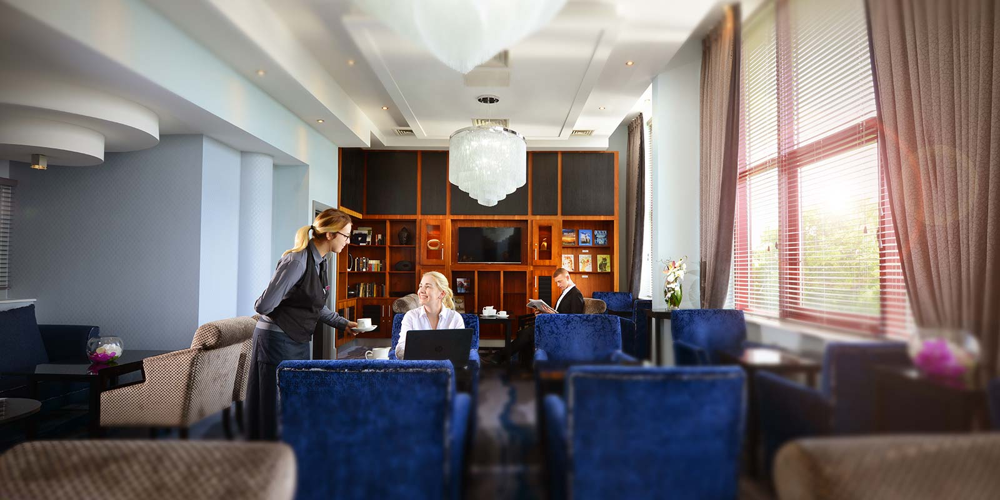

Welcome to Tifco Hotel Group
An Experienced Hospitality, Development and Management Company
An Experienced Hospitality, Development and Management Company




Clontarf Castle Hotel is one of Dublin's most luxurious Castle hotels and is located just two miles from Dublin city centre and just five miles from Dublin Airport.
Read more
Located in 85 acres of the mature woodlands of Northwood Park, Santry, this Crowne Plaza Hotel is just minutes from Dublin Airport with our complimentary airport shuttle bus.
Read more
The Crowne Plaza Hotel Dundalk is located midway between Dublin and Belfast and is just 45 minutes from Dublin Airport and less than 1 hour from Belfast.
Read moreThe Crowne Plaza Hotel Dublin Blanchardstown, one of Ireland's newest 4 Star luxury hotels, offers a unique location setting this hotel apart from all other hotels in Dublin whether it’s for business, leisure or shopping in Dublin.
Read moreIn 2009 the 146 bedroom Cork International hotel and Ireland’s largest hotel, the Burlington, came under Tifco Hotel Group control in the form of Management Contracts.
Read moreIn 2010 the luxurious Parknasilla Resort & Spa Hotel in Sneem Co. Kerry was added to the portfolio of hotels under Tifco Hotel Group’s control in the form of a management contract up until its eventual sale in December 2012.
The magnificent 18th Century Georgian rural residence Johnstown house Hotel & Spa was also added to the group in 2010. A 126 bedroom 4 star hotel, an award winning Elemis Spa with 18 treatment rooms, 40 Self Catering Apartments, and world class training pitches to accommodate all sport disciplines.
Read moreIn 2011 Tifco Hotel Group added the luxurious Lough Erne Resort, Enniskillen, Co. Fermanagh, Northern Ireland, and Ashford Castle, Co. Mayo to its portfolio.
Lough Erne Resort is set on its very own 600 acre peninsula and has 95 luxurious bedrooms and suites, 25 Self Catering Lodge Suites, 2 Championship Golf Courses including The Faldo Course, and an authentic Thai Spa. This resort was chosen as the host venue for the G8 Summit in June 2013.
Beginning over 800 years ago and opened as a hotel in 1939 Ashford Castle is one of Ireland's most preeminent Castle Hotels. Set on over 350 acres, the 83 roomed 5 star hotel is the perfect place to escape the hustle and bustle of modern life and unwind in complete luxury.
Hotel Clybaun in Knocknacarra joined the group in 2011. Hotel Clybaun is located equidistant from both Salthill Seaside Resort and Galway City. It offers easy access to Galway City and also the scenic beauty of Connemara, there is also a state of the art leisure centre in the hotel.
Read moreIn 2012 the 5 star luxury Glenlo Abbey Hotel located in Galway was added to the portfolio, followed by the stylish Athlone Springs Hotel.
Read moreIn May 2014 the 188 bedroom family focused Hotel Killarney was added to the Tifco Hotel Group portfolio. In September 2014 The Heritage Killenard was also added to the portfolio. The Heritage Killenard is a 5 Star Hotel set in the wonderful, un-spoilt Laois Countryside.
Read moreThe Hilton Dublin Kilmainham is a 120 room hotel overlooking the Kilmainham Gaol Museum and the hotel is surrounded by some of Dublin’s premier attractions including the Guinness Storehouse, Royal Hospital Kilmainham and IMMA, Old Jameson Distillery, and Dublin Zoo.
In January 2015 Tifco Hotel Group oversaw the re-launch of the 80 room Cork Airport Hotel. The Cork Airport Hotel is a recently refurbished Airport Hotel located at the bustling Cork International Airport, Ireland's second-busiest airport. In June 2015 Tifco Hotel Group was appointed as managers of The Metropole Hotel. The Metropole Hotel is a very historic hotel located in Cork City Centre. It has 112 bedrooms, 12 meeting rooms, banqueting facilities for 400 people, and a leisure centre.
Read moreThe Parliament Hotel (formerly Arlington Hotel Temple Bar), in the heart of Medieval Dublin and overlooking historic Dublin Castle, a 63 bedroom hotel in an ideal location to explore Dublin City Centre's main tourist attractions and enjoy the lively nightlife and music scene. In December 2016 Tifco Hotel Group purchased the Travelodge Ireland brand, comprising 12 hotels across Ireland.
In May 2016 Tifco Hotel Group was appointed as manager of the 4 Star Farnham Estate in Co. Cavan on a short-term contract while the property was being sold.
Read moreThe Innisfallen hotel is a 64 bedroom hotel located on the outskirts of Killarney in the picturesque village of Fossa. Innisfallen features the serene Fossa Way Walk is on it's doorstep and is just four miles from the beautiful Gap of Dunloe.